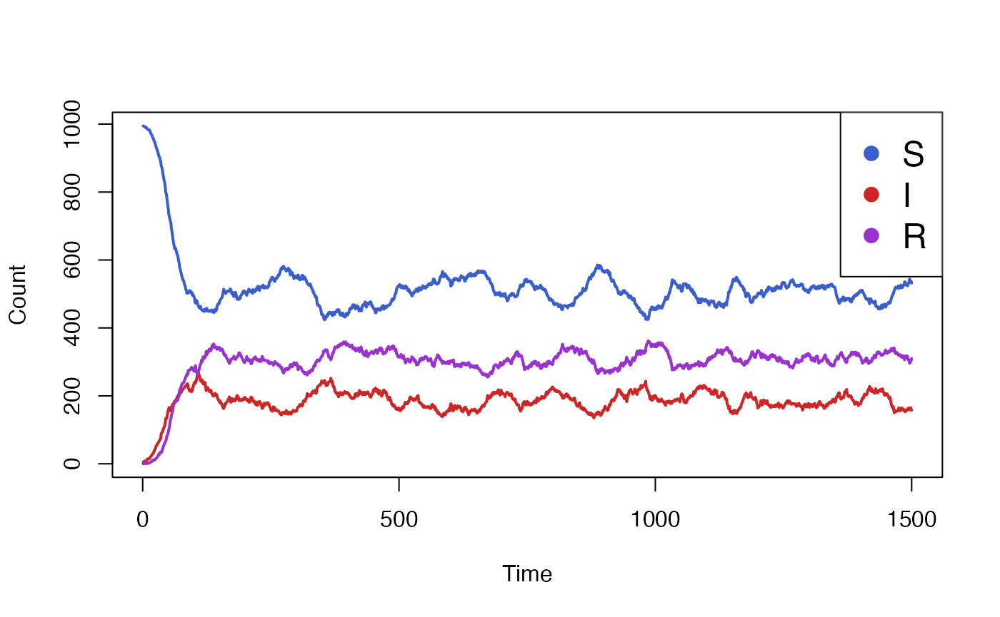
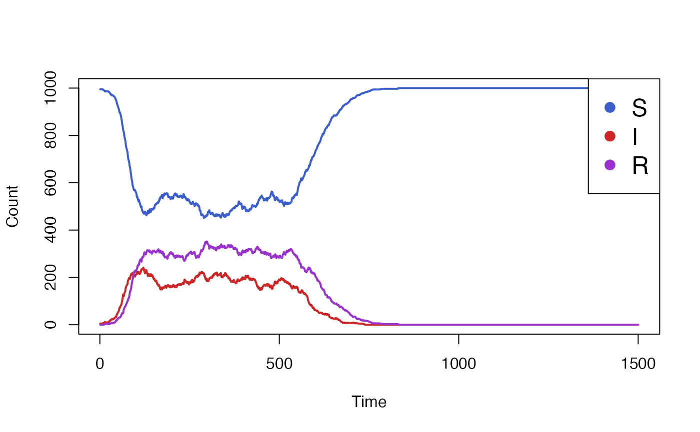
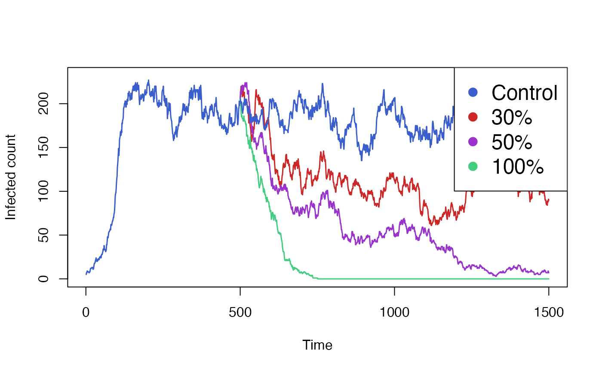
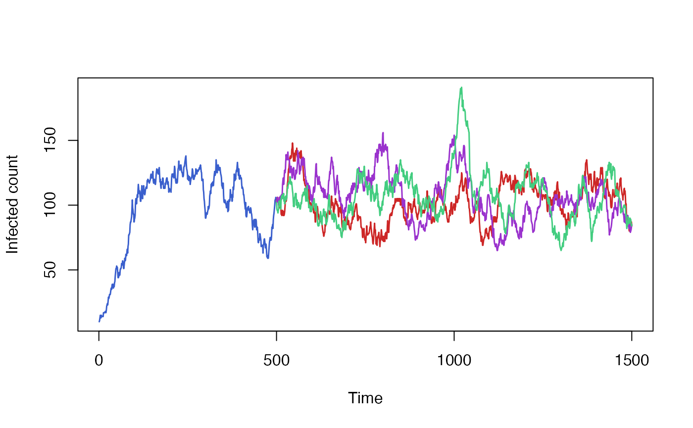

When modeling the impact of an intervention on a disease, it is common to have a first simulation phase where the intervention is disabled to achieve steady-state, followed by a second phase during which the intervention is applied. Often, we want to run the second phase many times over, varying the intervention parameters. Simulating the first phase every time is unnecessary and wasteful, since it isn’t affected by the intervention parameters.
Individual allows the user to run a simulation for a number of time steps, save the state of the simulation and resume it multiple times, with different parameters each time. This way, the initial phase before the intervention only needs to be simulated once.
The typical way to use this feature is to define a simulation
function which creates all the relevant simulation data and then calls
simulation_loop. The function we define takes in an
optional state parameter that is passed through to
simulation_loop.
run_simulation <- function(timesteps, state = NULL) {
health <- CategoricalVariable$new(c("S", "I"), rep("S", 10))
process <- bernoulli_process(health, "S", "I", 0.01)
simulation_loop(
variables = list(health),
processes = list(process),
timesteps = timesteps,
state = state)
}The simulation can be run a first time, for a given number of steps. It returns a state object, which captures the internal state of all variables and events, the state of the random number generator and the number of time steps that were simulated.
state <- run_simulation(timesteps = 50)Finally, the simulation is resumed with a larger number of time
steps, passing in the state object as an argument. The
timesteps argument refers to the total number of time
steps, including both the original simulation run and the new one. In
this case, run_simulation will only simulate 50 extra
steps. Before running the actual simulation,
simulation_loop will reload the simulation state from its
argument, overwriting any values we had set when initializing the
variables.
run_simulation(timesteps = 100, state = state)To demonstrate the checkpoint and restore functionality of individual in a practical setting, we will use a SIRS model with a vaccination intervention. Our aim is to compare the impact of the vaccination campaign, given different vaccine efficacy scenarios.
Individuals in the simulation move from being susceptible (S) to
infectious (I) to recovered (R) and back to susceptible, after their
natural immunity wanes off. Out of the entire population N,
only I0 individuals are initially infectios, and the rest
are susceptible. Orthogonally, an individual can either be vaccinated
(Y) or not (N). The vaccination and the immunity it confers never wanes
off. All individuals are initially unvaccinated.
make_variables <- function(N, I0) {
health_states_t0 <- rep("S",N)
health_states_t0[sample.int(n = N,size = I0)] <- "I"
health <- CategoricalVariable$new(categories = c("S","I","R"), initial_values = health_states_t0)
vaccinated <- CategoricalVariable$new(categories = c("Y", "N"), initial_values = rep("N", N))
list(health = health, vaccinated = vaccinated)
}A vaccinated individual has a reduced probability of becoming infectious, as determined by the vaccine’s efficacy. The function below creates the process to model infection. It samples from the susceptible compartments, applying the different rates depending on the whether an individual’s vaccinated status.
make_infection_process <- function(health, vaccinated, N, beta, vaccine_efficacy) {
function(t) {
I <- health$get_size_of("I")
foi <- beta * I / N
vaccinated_S <- health$get_index_of("S")$and(vaccinated$get_index_of("Y"))
non_vaccinated_S <- health$get_index_of("S")$and(vaccinated$get_index_of("N"))
vaccinated_S$sample(rate = foi * (1 - vaccine_efficacy))
non_vaccinated_S$sample(rate = foi)
health$queue_update(value = "I", index = vaccinated_S)
health$queue_update(value = "I", index = non_vaccinated_S)
}
}Vaccination happens at fixed mass-vaccination event, according to a
pre-determined schedule defined by the vaccination_times
parameter. Each vaccination event affects a percentage of the
population, as determined by the vaccination_coverage
parameter. The coverage may vary from one instance to the next.
Because we intend on saving and restoring the simulation with various
vaccination schedules, we pass restore = FALSE to the
Event constructor. See the Saving and
restoring events section for details.
make_vaccination_event <- function(vaccinated, vaccination_times, vaccination_coverage) {
e <- Event$new(restore = FALSE)
e$schedule(vaccination_times - 1)
e$add_listener(function(t) {
index <- which(vaccination_times == t)
coverage <- vaccination_coverage[[index]]
targets <- vaccinated$get_index_of("N")$sample(coverage)
vaccinated$queue_update(value = "Y", targets)
})
e
}We will define our simulation as a function, taking the simulation
parameters as arguments. Any additional arguments to the function, as
denoted by ..., will be passed on to
simulation_loop. This will allow us to pass the
state argument in. The function returns the simulation data
as well as the new saved state.
run_simulation <- function(
steps,
N = 1e3,
I0 = 10,
beta = 0.08, # S -> I
gamma = 0.05, # I -> R
xi = 0.02, # R -> S
vaccination_times = NULL,
vaccination_coverage = rep(0.2, length(vaccination_times)), # N -> Y
vaccine_efficacy = 1,
...)
{
variables <- make_variables(N, I0)
infection_process <- make_infection_process(
variables$health,
variables$vaccinated,
N, beta, vaccine_efficacy)
recovery_process <- bernoulli_process(variables$health, "I", "R", gamma)
return_process <- bernoulli_process(variables$health, "R", "S", xi)
vaccination_event <- make_vaccination_event(
variables$vaccinated, vaccination_times, vaccination_coverage)
renderer <- Render$new(timesteps = steps)
health_render_process <- categorical_count_renderer_process(
renderer = renderer,
variable = variables$health,
categories = variables$health$get_categories()
)
processes <- list(
infection_process,
recovery_process,
return_process,
health_render_process)
final_state <- simulation_loop(
variables = variables,
events = list(vaccination_event),
processes = processes,
timesteps = steps,
...)
list(result = renderer$to_dataframe(), state = final_state)
}We will start by running and plotting our baseline simulation, with the intervention disabled.
data <- run_simulation(steps = 1500)$result
colours <- c("royalblue3","firebrick3","darkorchid3")
matplot(
x = data["timestep"],
y = data[c("S_count","I_count", "R_count")],
xlab = "Time", ylab = "Population count",
type = "l", lwd = 2, lty = 1, col = colours
)
legend(
x = "topright",
pch = rep(16,3),
col = colours,
legend = c("S", "I", "R"), cex = 1,
bg='white'
)
We see that the simulation takes some time to settle from its initial
parameters to its steady-state conditions. We will now enable the
vaccine intervention, but only starting at a point after the simulation
has settled, for example at t=500, and every 250 steps
after that.
vaccination_times <- seq(500,1500,250)
data <- run_simulation(steps = 1500, vaccination_times = vaccination_times)$result
colours <- c("royalblue3","firebrick3","darkorchid3")
matplot(
x = data["timestep"],
y = data[c("S_count","I_count", "R_count")],
xlab = "Time", ylab = "Count",
type = "l", lwd = 2, lty = 1, col = colours
)
abline(v = vaccination_times, col = "snow4")
legend(
x = "topright",
pch = rep(16,3),
col = colours,
legend = c("S", "I", "R"),
cex = 1,
bg='white'
)
The simulation above clearly shows the effect of the vaccination
campaign, starting at t=500. However, it made the
optimistic assumption of a 100% vaccine efficacy. We wish to run the
simulation again but with varying levels of efficacy, in order the
compare its impact.
While we could run the code above many times over, each simulation
would repeat the first 499 timesteps, despite the result being identical
each time. Instead we start by running only these timesteps, and saving
the result. The details of the intervention (ie.
vaccination_times and vaccine_efficacy) are
irrelevant and can be omitted.
initial <- run_simulation(steps = 499)From this initial result, we can resume the simulation, but using different values of vaccine efficacy each time. We also include a control simulation, in which no vaccination takes place. Each of these simulation will skip the first 499 steps and only run the next 1001 time steps.
control <- run_simulation(steps = 1500, state = initial$state)
vaccine50 <- run_simulation(
steps = 1500, vaccination_times = vaccination_times, vaccine_efficacy = 0.5,
state = initial$state)
vaccine80 <- run_simulation(
steps = 1500, vaccination_times = vaccination_times, vaccine_efficacy = 0.8,
state = initial$state)
vaccine100 <- run_simulation(
steps = 1500, vaccination_times = vaccination_times, vaccine_efficacy = 1.0,
state = initial$state)Finally we aggregate and plot the results from all these simulations. We also need to include the data from our initial run, which we will plot the same colour as our control simulation.
colours <- c("royalblue3", "firebrick3","darkorchid3", "seagreen3")
# Pad initial out to ensure it has the same shape as other series.
initial$result[500:1500,] <- NA
matplot(
data.frame(
initial$result[,"I_count"],
vaccine50$result[,"I_count"],
vaccine80$result[,"I_count"],
vaccine100$result[,"I_count"],
control$result[,"I_count"]),
xlab = "Time", ylab = "Infected count",
type = "l", lwd = 1.5, lty = 1, col = colours,
)
abline(v = vaccination_times, col = "snow4")
legend(
x = "topright", pch = rep(16,3),
col = colours,
legend = c("Control", "50%", "80%", "100%"),
cex = 1,
bg='white'
)
Saving and restoring the simulation state comes with a number of caveats.
CategoricalVariable cannot be
modified, etc. The order of variables and events passed to the
run_simulation function must remain stable.While parameters of the simulation can be changed between the initial
run and the subsequent runs (as demonstrated with the
vaccine_efficacy parameter above), in general you should
not modify parameters that would have been already had an impact on the
first part of the simulation. Doing so would produce results that can
only be produced through checkpoint and resume, and not as a single
simulation.
For example, in our SIRS model, it may be tempting to model a time-varying parameter by running half of the simulation with one value and then resuming it with a different value. While this would probably work, it would be brittle and hard to compose. As more time-varying parameters are introduced to the model, the simulation would need to be saved and restored each time a value changes.
By default resuming a simulation does not restore R’s random number generator’s state. Every resumed run from the same saved state will be independent and, if the model is stochastic, will produce different results.
We can demonstrate that by running the baseline of our SIRS model multiple times and plotting the results. All three runs start off from the same state, inherited from our original model run, but quickly diverge based on the outcome of random draws.
initial <- run_simulation(steps=499)
run1 <- run_simulation(steps = 1500, state = initial$state)
run2 <- run_simulation(steps = 1500, state = initial$state)
run3 <- run_simulation(steps = 1500, state = initial$state)
initial$result[500:1500,] <- NA
matplot(
data.frame(
initial$result[,"I_count"],
run1$result[,"I_count"],
run2$result[,"I_count"],
run3$result[,"I_count"]),
xlab = "Time", ylab = "Infected count",
type = "l", lwd = 1.5, lty = 1, col = colours
)
Sometimes this behaviour may not be desirable, and we would instead like to restore the state of the random number generator exactly where it was when we stopped the first part of the run. One example of this is when checking that our model behaves the same whether or not it was saved and resumed.
The code below show an attempt at running the model twice, once as a continous run and once in a piecewise manner. We would hope that seeding the random generator at the start of the simulation would be enough to get identical results out of it. Unfortunately we don’t, because the random number generator state’s at the intermediate point isn’t being preserved.
set.seed(123)
uninterrupted_run <- run_simulation(steps = 1500)$result
set.seed(123)
piecewise_run_initial <- run_simulation(steps = 499)
piecewise_run_final <- run_simulation(steps = 1500, state = piecewise_run_initial$state)
piecewise_run <- rbind(piecewise_run_initial$result, piecewise_run_final$result[500:1500,])
all.equal(uninterrupted_run, piecewise_run)
#> [1] "Component \"S_count\": Mean relative difference: 0.07121431"
#> [2] "Component \"I_count\": Mean relative difference: 0.2255931"
#> [3] "Component \"R_count\": Mean relative difference: 0.1328323"We can try to resume the simulation again, but this time set
restore_random_state = TRUE to enable restoring the
simulation state. This time we’ve successfully managed to reproduce the
data from our uninterrupted run.
piecewise_run_final <- run_simulation(
steps = 1500,
state = piecewise_run_initial$state,
restore_random_state = TRUE)
piecewise_run <- rbind(piecewise_run_initial$result, piecewise_run_final$result[500:1500,])
all.equal(uninterrupted_run, piecewise_run)
#> [1] TRUEUsing restore_random_state = TRUE resets the global
random number generator’s state, which could have surprising and
undesirable side effects. It is generally useful in tests, but should be
used carefully elsewhere.
By default, the Event and TargetedEvent
classes save their schedule in the checkpoint and restore them when
loading from a previous simulation state. When restoring its schedule,
the event will clear its existing schedule and overwrite any pending
time steps with the schedule found in the saved state.
For example in the code below, the simulation is first initialized
with an event scheduled at t=10 and is run for only 5
steps, hence the event does not yet trigger. On the second run, the
event is seemingly scheduled for t=15. However, by resuming
the simulation, the event’s schedule is overwritten with the saved
state, clearing the newly scheduled time. The event is triggered at
t=10 only.
e <- Event$new()
e$schedule(9)
state <- simulation_loop(timesteps = 5, events = list(e))
e <- Event$new()
e$schedule(14)
e$add_listener(function(t) cat("Triggered at timestep", t))
simulation_loop(timesteps = 30, events = list(e), state = state)
#> Triggered at timestep 10Such a behaviour may prevent some modeling scenarios from being used with the save and restore effectively. For example, in our prior SIRS model, we wanted to be able to simulate historical data, where no intervention took place, and then resume it with different intervention parameters. If the vaccination event were to always restore its state from the original run, we would not be able to set a new schedule on the intervention runs.
This behaviour can be modified on a per-event basis by passing
restore = FALSE as an argument to the Event
constructor. In that case, the schedule from the original run is
ignored, and instead the schedule of the new run is only determined from
its new initialization.
In the modified example below, the event triggers at
t=15 as intended. When restoring the simulation, we had
also schedules the event to trigger at t=3, but this never
happens as it is before the point where the simulation is restored.
e <- Event$new()
e$schedule(9)
state <- simulation_loop(timesteps = 5, events = list(e))
e <- Event$new(restore=FALSE)
e$schedule(c(2, 14))
e$add_listener(function(t, index) cat("Triggered at timestep", t))
simulation_loop(timesteps = 30, events = list(e), state = state)
#> Triggered at timestep 15